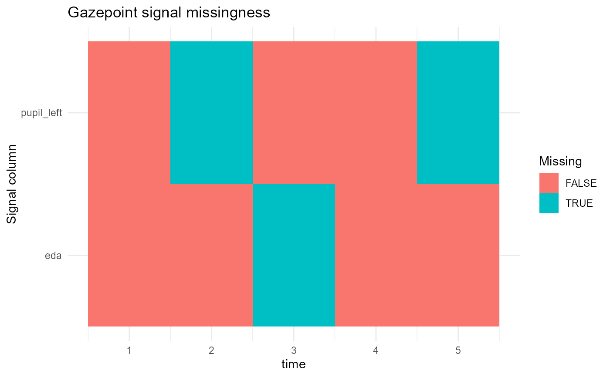

Plot missingness across Gazepoint signal columns
Source:R/pupil-qc-reporting.R
plot_gazepoint_missingness.RdCreates a heatmap-style plot showing missing and observed samples across selected Gazepoint signal columns. This is a descriptive quality-control display and should not be interpreted as evidence of psychological or physiological state.
Usage
plot_gazepoint_missingness(
data,
cols = NULL,
time_col = NULL,
id_col = NULL,
max_points = 5000L
)Arguments
- data
A data frame.
- cols
Character vector naming columns to inspect. If
NULL, numeric columns are used.- time_col
Optional column used for the x-axis. If
NULL, row number is used.- id_col
Optional participant/session column used for faceting.
- max_points
Maximum number of rows to plot. Larger data sets are evenly down-sampled for display only.
Examples
d <- data.frame(
time = 1:5,
pupil_left = c(3, NA, 3.1, 3.2, NA),
eda = c(1, 1.1, NA, 1.2, 1.3)
)
plot_gazepoint_missingness(d, cols = c("pupil_left", "eda"), time_col = "time")
